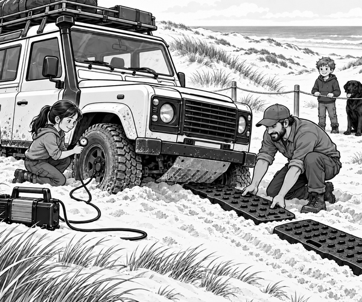

Wind whispered over the dunes.
Tom and Scout stood behind the safety rope.
Dad stood beside them.
They were watching a 4x4 sand lesson.
Ranger Mia drove slowly along the marked track.
The first patch of sand was firm.
The next patch was pale and soft.
The heavy 4x4 began to sink.
Mia felt the wheels slow.
She pressed the pedal just a little.
The tyres spun.
Sand sprayed behind them.
The vehicle sank lower.
Mia stopped at once.
Sand fact: A spinning tyre can scoop loose sand away. The wheel may dig itself deeper instead of moving forwards.
Mia switched off the engine.
She climbed out on the firm side.
“More power will not fix this,” she said.
Dad nodded.
“We need to help the tyres float over the sand.”
First, Mia checked each tyre with a gauge.
She let out a small amount of air.
The bottoms of the tyres spread wider.
They could now press on more sand.
Next, Dad cleared the loose piles from the tyres.
He pushed two broad traction boards into place.
The boards made a firm path over the soft patch.
Tom watched from behind the rope.
Scout watched too.
His black ears pointed forwards.
“Why not race onto the boards?” Tom asked.
“Fast spinning could throw them out,” Dad said.
“Slow and steady is better.”
Mia and Dad moved well away.
A guide stood where Mia could see him.
Mia started the engine.
She chose a low gear.
The guide waved her forwards.
The tyres turned slowly.
Crunch.
They gripped the first board.
The 4x4 lifted a little.
Crunch.
The back tyres climbed too.
Mia kept the wheels straight.
The vehicle rolled onto firm sand.
The guide closed both fists.
Stop!
“Sand trap escaped!” cheered Tom.
Scout gave one happy bark.
Before returning to the hard road, Mia used the compressor.
She filled every tyre to its normal pressure.
Tyre fact: Lower pressure can help on soft ground, but tyres must be returned to the correct pressure before normal road driving.
Dad collected the boards.
There had been no wild pull.
There had been no shower of flying sand.
A wide footprint, two firm boards and one calm driver had done the job.
1. What trapped Mia's 4x4?
2. Why did Mia stop spinning the tyres?
3. What helped the tyres climb out?